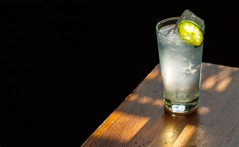

The Rickey

Story
The Rickey is one of the most refreshing drinks, arriving at a time when ice was just beginning to make its way into hotels and saloons across the country.
Most often served with a clear spirit like Gin or Vodka, you can use this recipe to make any spirit refreshing.
This drink is wildly refreshing, not containing any sugar in its original for, just a bracing cold, fizzy
One key to its magnificence is the addition of saline solution, mimicking the non-neutral sparkling water of generations ago.
Ingredients
- 6 cL lear spirit, like Gin or Aquavit
- 4 drops 25% saline solution or a pinch of salt
- 12 cL Sparkling water
- 2 cL Lime juice (fresh)
- Sugar or simple syrup to taste
Instructions
- Get your favorite tall, slender glass out of your cabinet and place a few cubes of ice therein.
- Add your choice of clear spirit and the line juice.
- Add the salt or saline solution.
- Fill the glass with sparkling water, as dilute as you'd like it to be.
- Stir with a long barspoon, gently, as to not enrage the fizz.
- Taste with a straw, and add some sweetness if you'd like.
- Enjoy the heck out of your Rickey!
Home